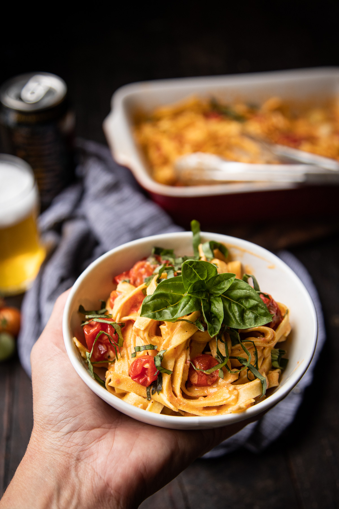

Tomato Pasta

Ingredients
- 1.2kg of cherry tomoatoes
- 120grams of goats cheese
- 500grams of penne pasta
- 2 tbl spoon
- 4 large cloves of garlic
- 1 teaspoon of salt
- 2 teaspoons of blackpepper
- 1/4 cup of good quality olive oil
- 1/4 cup beer (golden ale)
- 6 leaves of fresh basil minced
Instructions
- Preheat oven to 400 deg F
- Add the cherry tomatoes, garlie, goat cheese, salt and pepper to a backing dish, drizzle with olive oil
- Bake for 30-35 minutes or until the tomatoes are bursting
- Remove from the over, stir in the beer
- Add the pasta, stir untill well coated, sprinkle with basil
- Plate, serve warm